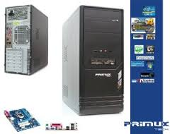

Primux Tech
Precio 800€
Caja Semitorre ATX PRIMUX M95 <> Fuente de 500W - VENTILADOR DE 12 CM <> LED. USB y Audio Frontal. <> 4 Bahias 3,5". 2 Bahias 2,5" <> <> Procesador Intel i7 4770S 3.1 GHz <> Placa Base Gigabyte H87M.HD3 <> Memoria KINGSTON 8GB DDR3 <> Disco Duro 1000 GB SATA 7200 <> Regrabadora DVD SATA <> Lector de tarjetas <> S.O. Freedos <>